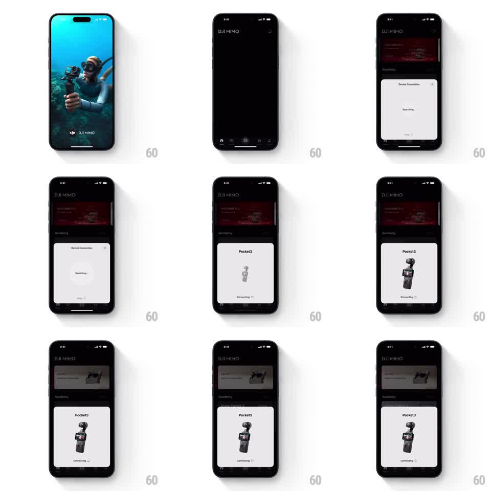

Media
Frame-by-frame

Rebuild this animation 1:1: DJI Mimo's device connection sheet - a bottom sheet opens with a pulsing search radar, then transitions into a product connection state where the Pocket 3 render scales in with a Connecting status.

Rebuild this animation 1:1: DJI Mimo's device connection sheet - a bottom sheet opens with a pulsing search radar, then transitions into a product connection state where the Pocket 3 render scales in with a Connecting status. ## Integration Integration: stack-agnostic spec - springs given as stiffness/damping, timed motions as duration + curve; map every value to your framework and animation library of choice. ## Scene The DJI Mimo home screen (dark, with a red product banner) behind a white "Device Connection" bottom sheet. The sheet first shows a "Searching..." state with a pulsing radar animation, then swaps to the found device: "Pocket3" title, a product render of the gimbal camera scaling up, and a "Connecting" status with a spinner. ## Motion spec Pattern: two-state connection sheet, ~4s total. - The sheet slides up (spring stiffness 300 damping 26) with a close X at top right. - Searching state: concentric radar rings pulse outward from center (1.5s loop, fading as they expand) around the "Searching..." label. - On device found, the radar fades out (200ms) and the product render scales in from 0.6x (spring stiffness 280 damping 18) as the title swaps to the device name (crossfade 250ms). - The "Connecting" label appears below with an inline spinner (1s rotation loop). - The sheet stays at a fixed detent through the state change - only its content animates. ## Calibration - The state swap is a clean crossfade with a scale - no layout jump in the sheet height. - The radar pulse is centered and soft; it never touches the sheet edges. ## Reduced motion States crossfade; static spinner. ## Don't miss - The product render is a real device photo-style render, not an icon. - The background app dims while the sheet is up.